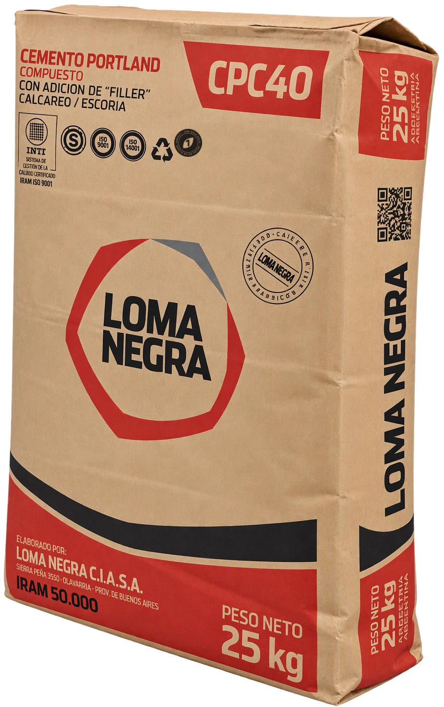
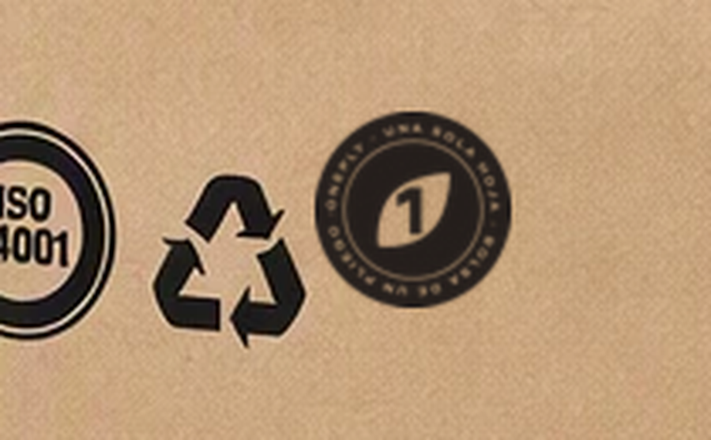
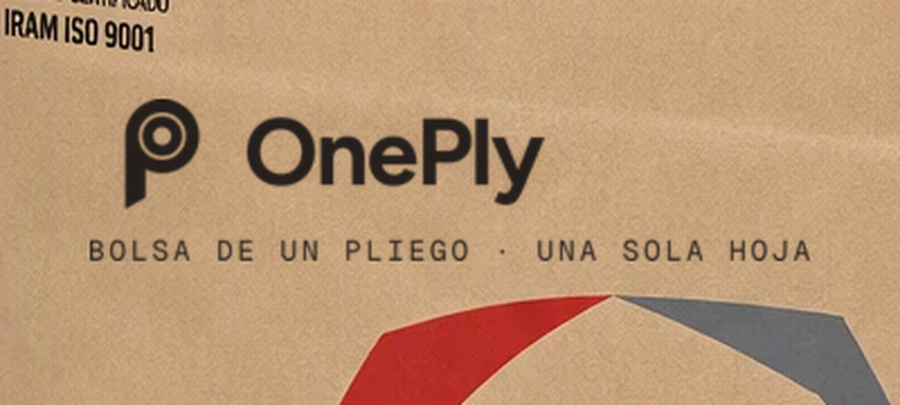
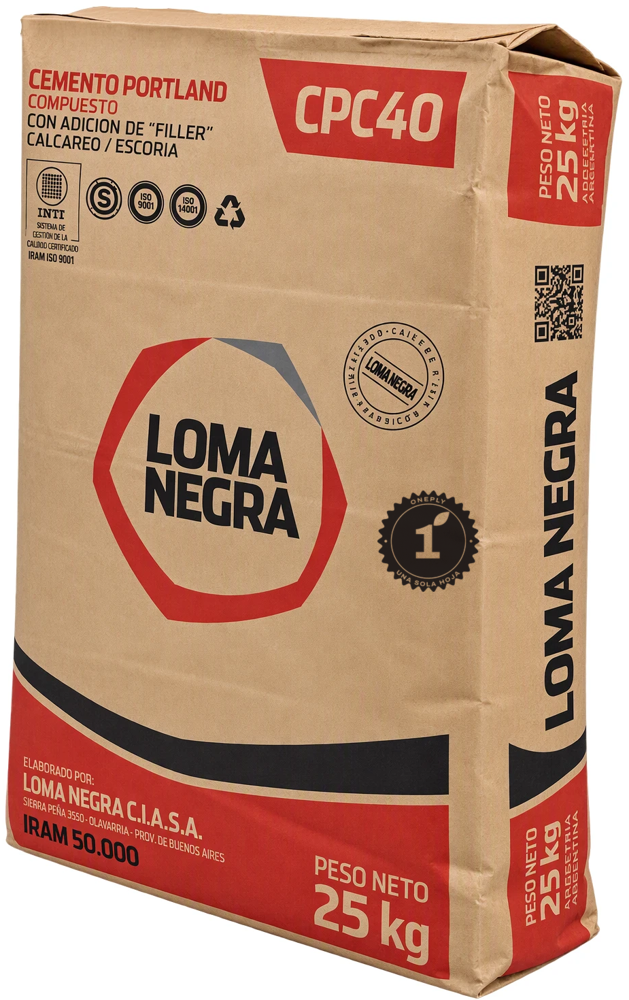
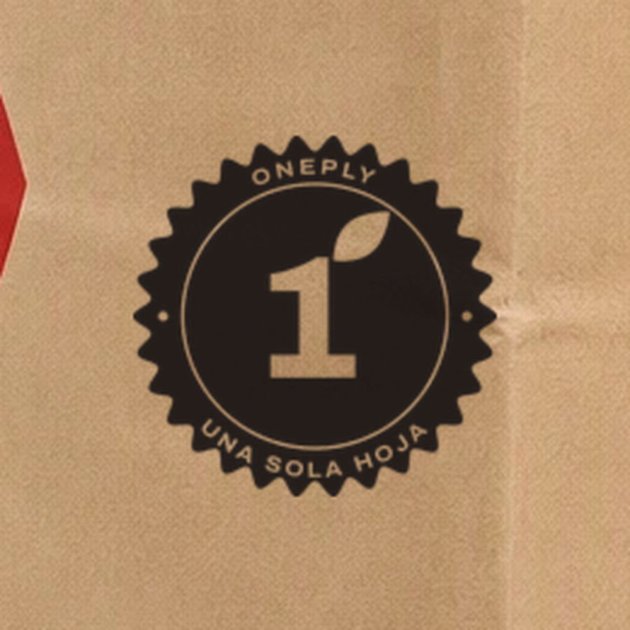
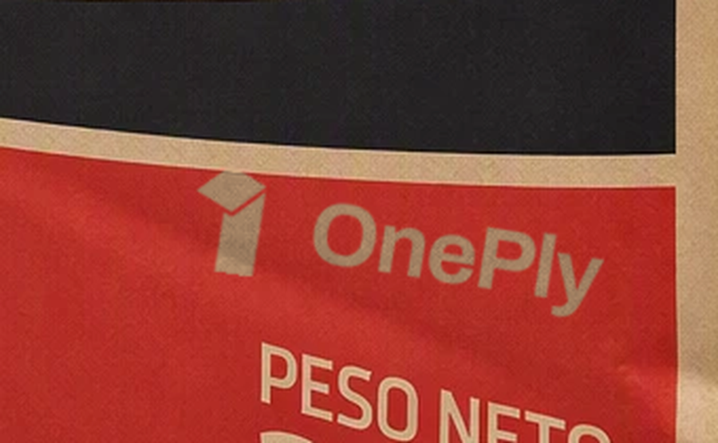
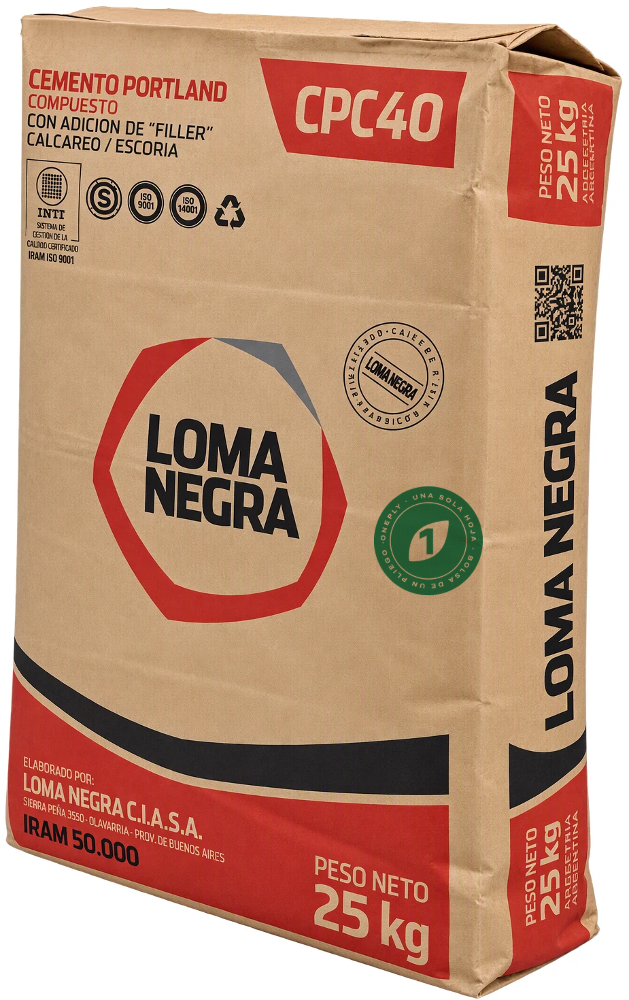
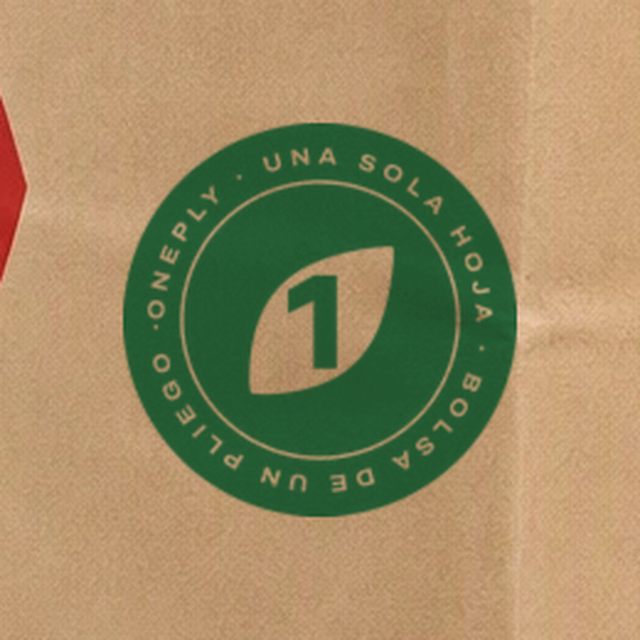

01En la fila de certificacionesSello «Hoja calada» chico, al lado de ISO e INTI. Se lee como un respaldo técnico más.Sin tinta extra · el más discreto

02Firma sobre la marcaLogo «Bobina» con la bajada «Bolsa de un pliego · Una sola hoja», arriba del logo del cliente.Sin tinta extra · el más legible


03Roseta en zona libreSello de garantía mediano en el espacio libre junto al hexágono, en diálogo con el sello del cliente.Sin tinta extra · el más visible

04Calado en la banda rojaLogo «Uno plegado» calado en la tinta roja del cliente: se ve el kraft, sin sumar color.Usa la tinta del cliente


05Sello en verdeEl mismo sello en un verde propio. Destaca más y suma el mensaje sustentable.Requiere una tinta extra